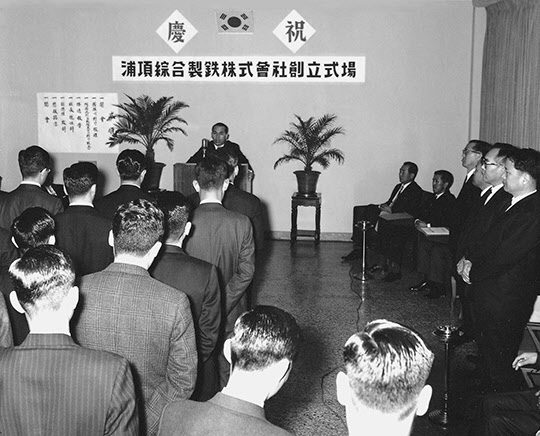
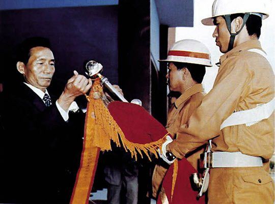

보도일 2014-07-25출처 조선일보 프리미엄조선 연재
1968년 4월 1일. 이 만우절에는 한국 현대사가 기록할 두 가지 ‘특별한 기념식’이 열렸다. 장소는 대전과 서울. 대전의 것은 거창하고, 서울의 것은 조촐했다. 다만 시작이 조촐하다 해서 미래도 그래야 한다는 것은 아니었다. 시작은 미약하지만 끝은 창대하리라. 이 말이 바이블에 있지 않는가.
그날 대전 공설운동장에서는 예비군 창설 기념식이 열렸다. 대통령이 직접 참석한 행사였다. 박정희가 야당의 반대를 뚫고 향토예비군을 창설한 것은 평양 김일성의 대남 적화전략 중 무장공비 침투에 대비하는 통치 차원의 사안이었다. 그만큼 절박한 사정이 있었다.
한국이 베트남에 파병한 1965년부터 북한의 대남 도발은 1953년 휴전 후 십여 년에 비해 횟수와 강도가 높아졌지만, 특히 1968년 1월 21일 북한 특수부대가 박정희를 살해하기 위해 청와대 턱 밑까지 침투했다가 무고한 시민들의 목숨을 앗아간 이른바 1·21사태는 온 나라를 발칵 뒤집어놓은 도발이었다.
‘김신조’라는 이름과 거의 맞물렸던 ‘예비군’ 창설. 이에 대해 정치적 억압을 강화하려는 정략이라는 비판도 강력히 제기되었다. 그러나 사건에 비유하자면, 박정희에게 알리바이를 제공한 이가 김일성이었다. 소련파, 남로당파, 연안파를 차례로 숙청하여 평양 정권을 완전히 장악한 그즈음에 김일성 항일빨치산 출신들이 주도한 1·21사태는 박정희의 남한이 반공옹벽을 한층 강화시키는 빌미를 줬던 것이다.
예비군 창설의 그 만우절, 서울 한복판 명동 유네스코회관 3층에서는 조촐한 기념식이 열렸다. ‘포항종합제철주식회사’ 창립식이었다. 창립요원은 사장 박태준을 포함해 모두 39명이었다. 9시 30분에 시작된 공식 행사를 마치고 담소를 나누는 뒤풀이 분위기는 차분한 가운데 비장감 같은 것이 감돌고 있었다. 누가 뭐라 하든 실망할 것도 없고 들뜰 것도 없다는 차분함 속에 흐르고 있는 그것은 박태준의 카랑카랑한 창립사가 남긴 여운이었다.

1968년 4월 1일 명동 유네스코회관에서 열린 포항종합제철주식회사 창립식. 박태준 사장이 창립사를 하고 있다
모든 성공여부는 지금부터 우리에게 주어진 직접적인 사명이며, 따라서 우리 자신의 잘못은 영원히 기록되고 추호도 용납될 수 없으며 가차 없는 문책을 받아야 합니다. 건전한 창업의 기반을 흔드는 전통적인 한국적 사회폐습의 침투력에는 과감히 도전하여 창업 시에 경험하는 사회사업적인 인사관리나 예산회계관리, 물자관리가 되지 않도록 확고한 신념으로 모든 일을 계획하고 집행해 나가는 것을 기본정신으로 삼아주시기를 강력히 요청합니다.>
너무나 실용적인, 쇠토막처럼 딱딱하고 강건한 선언이며 맹세다. 직접적인 사명, 추호도 용납될 수 없음, 가차 없는 문책. 이 말들에는 벌써 목숨을 걸자는 비장미가 엿보인다. 한국적 사회폐습에 과감히 맞서야 한다는 주문에는 부정부패를 철저히 불식하고 인사 청탁이나 이권 청탁을 단호히 배격하자는 굳센 결의가 도드라진다.
포철 창립사를 직접 쓴 사람은 박태준에게 필생의 동지요 최고 참모였다고 평가 받는 황경로 초대 기획관리부장이었다. 뒷날에 포철 제2대 회장(1992년-1993년)을 역임한 황경로는 그때 박태준 사장에게 받은 메모에 3가지가 적혀 있었다고 회고한다. 첫째, 최저 비용으로 최고 회사. 둘째, 금전과 물자에 대한 부패 근절. 셋째, 인화(人和). 박태준의 한 특징은 연설문을 누가 쓰든 자신의 뜻과 안 맞으면 수정을 지시하고 의문점을 확인한다는 점이었다. 이것은 자신의 말을 지켜야 한다는 책임감의 발로였다.
그렇게 비장한 창립을, 그 책임자가 하필 만우절로 잡는 것에 대하여 염려를 감추지 못하는 목소리들도 있었다. 창업 준비를 맡은 실무자들이 회사 창립일을 잡아 보라는 박태준의 지시를 받은 것은 그해 3월 20일이었다. 그날은 달포 전에 불입된 정부 출자금 3억 원과 대한중석 출자금 1억 원을 최초 자본금으로 삼아 종합제철 창립 주주총회를 개최한 날이었다. 실무자들은 뚜렷한 기준을 잡기 어려워서 유명한 역술인을 찾아갔다. 식당 개업 택일에도 온갖 정성을 바치는 한국 풍속이니까 살 떨리는 일이 아닐 수 없었다.
창립일 후보는 셋으로 나왔다. 3월 26일, 4월 1일, 4월 4일. 역술적 길일(吉日)이라는 점을 제외시켜도 저마다 특별한 의미를 지닌 날들이었다. 3월 26일은 건국(초대) 대통령 이승만의 생일, 4월 1일은 진정한 봄의 시작, 4월 4일은 청명. 그러나 찜찜한 맛을 풍기는 날들이기도 했다. 이승만은 말년에 다가설수록 성공한 대통령이 되지 못하는 길로 빠져버렸고, 만우절에는 어떤 약속을 걸든 허튼 수작으로 미끄러질 수가 있고, 청명은 그 말뜻이야 기가 막히게 좋지만 한국인의 기분에 ‘4’자 겹침만은 피하고 싶은 것이고…….
박태준은 4월 1일을 찍었다. 속으로 3월 26일이 좋겠다며 만우절만은 피할 것이라 기대하고 있던 실무자가 가만히 거부감을 드러냈다.
“4월 1일은 만우절 아닙니까?”
그러나 박태준이 단호히 반문했다.
“우리나라에 언제부터 만우절이 있었어?”
이래서 포항종합제철주식회사(POSCO) 창립일은 4월 1일로 결정됐다. 그때 창업 준비 실무자들은 짐작하지 못했을 테지만, 종합제철 건설의 책임을 짊어진 박태준의 머릿속에는 두 개의 상관성에 대한 생각이 가지런히 정돈돼 있었다. 철(鐵)과 경제의 분리할 수 없는 상관성, 예비군 창설을 초래한 북한의 도발을 이겨내야 하는 철과 안보(국방)의 분리할 수 없는 상관성.
그런데 포항제철 창립일과 일치했더라면 뒷날에 한국 산업화시대의 국가적 기념일로 지정해도 좋았을 기념식이 그보다 두 달 앞서 열렸다. 1968년 2월 1일 착공한 경부고속도로가 그것이다. 김영삼과 김대중을 위시한 야당의 극렬 반대와 1·21사태의 후유증 속에서 박정희가 의연히 밀어붙인 경부고속도로.

1973년 7월 3일 박정희 대통령이 포항제철에 단체표창을 수여하고 있다
박정희가 박태준을 청와대로 불러 경부고속도로와 종합제철 건설에 대해 하나의 중대 결의를 털어놓은 때는 1965년 6월 어느 날이었다.
“고속도로는 내가 직접 감독할 테니, 종합제철은 임자가 맡아.”
그날의 언약을 3년이 지나지 않아서 실현한 것인데, 왜 그때부터 박정희는 산업화의 성패를 건 두 국가적 거대프로젝트를 놓고 박태준 앞에서 자기다짐을 보이고 장차 그에게 맡길 ‘특명’에 대해 강하게 언질을 줬을까? 왜 박정희는 진작부터 박태준을 종합제철의 적임자로 찍을 수 있었을까?
1969년 10월부터 1978년 12월까지 대통령 비서실장을 지냄으로써 그 자리의 최장수를 기록한 김정렴이 “공기업 사장들 중에 유일하게 박태준 사장만 대통령과 독대했다”는 증언을 남겼다시피, 박정희는 최고 권좌에 올라 처음부터 끝까지 박태준에게만은 독대의 특권을 부여했다. 박정희와 박태준의 ‘그 무엇’이 그것을 가능하게 만들고 지속하게 만들었을까? 대체 두 사람의 독특한 인간관계는 어떠한 것이었을까? 이 궁금증을 풀기 위해서는 저 1948년 남조선경비사관학교의 허술한 강의실로 거슬러 올라가 실마리를 잡고 그 지점에서부터 이십여 년 세월을 따라가며 더듬어봐야 한다.